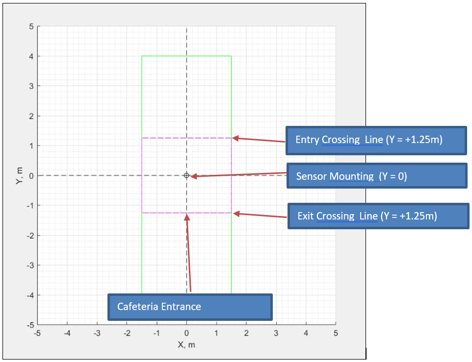

Introduction
Maintaining an accurate and updated count of current building occupancy is useful for many applications. Many entrance and occupancy sensors, such as PIR sensors or IR beam break counters, can have difficulties accurately sensing entrance and exit counts for multiple people. By using TI mmWave radar devices, such as the IWR6843AOP, occupancy detection systems can recognize and differentiate individual people and their location, increasing accuracy over traditional methods, while still allowing for small, discrete implementation and form factor with the antenna on package design of the IWR6843AOP device.
The objective of this experiment is to use the Overhead 3D people counting demo running on TI mmWave Sensor to count people entering and exiting a zone of interest such as a conference room, cafeteria or a store. The experiment was performed in a Cafeteria with the sensor setup near the cafeteria entrance to count the number of people walking in and out of the cafeteria. Using the information, the GUI is able to maintain an accurate count of people inside the Cafeteria at any given time.
Hardware and Software Setup:
- This experiment was setup near the entrance of an office cafeteria. The specific size of the cafeteria (or conference room etc) is not very important since the people counter is setup at the entrance. However, there should be at least 1.5m space along the Y axis i.e. the entry exit hallway to accommodate the entry/exit crossings as shown in the image below.
 - Follow the hardware and software setup procedures listed in the 68xx - Overhead 3D People Counting Demo user guide to setup the People Counting Demo with IWR6843AOP EVM and place the tripod near the zone entrance as shown in the above picture (Sensor Mounting Position).
- Use the Low Bandwidth mode binary and configuration files for this experiment, packaged in the folder below with matlab source files for the GUI.
overhead_occupancy_counter_gui.zip -
Important: Please use the Overhead_demo_visualizer_occupancy_counter GUI provided with this experiment instead of the visualizer GUI provided in the overhead 3D people counting demo.
- The Overhead_demo_visualizer_occupancy_counter GUI provided with this experiment works with the Overhead People counting demo binaries and configuration files and is custom modified to count people as they walk in an out of the cafeteria (or conf. room etc).
Method:
- With the hardware and Software setup ready and the Overhead Occupancy Counter GUI running on the PC, people can start walking in to the cafeteria.
- Entry Count: Each time a person walking into the cafeteria crosses the Entry Crossing line (Y = +1.25m), the Entry Count on the GUI will increment by 1.
- Exit Count: Each time a person walking out of the cafeteria crosses the Exit Crossing line (Y = -1.25m), the Exit Count on the GUI will increment by 1.
- Current Occupancy: The difference between Entry Count and Exit Count is shown as the Current Occupancy Count in the GUI.
- Please note that the GUI does not check for negative occupancy count so if the number of people walking out exceeds the number of people walking in, the Current Occupancy Count will become negative. This can be fixed by modifying the GUI source file.
Results:
- The results of this experiment are demonstrated in the video clips below. The occupancy counter is able to count people walking in and out of the zone of interest. A running count of number of people entered, exited, and currently occupying the building or area can be seen to updated in real time on the left side of the screen.
- The occupancy counter is able to count multiple people walking in side by side, which is typically difficult for traditional IR beam based entry exit monitoring solutions.
- The occupancy counter is able to keep accurate count of current occupancy when people enter and exit at the same time. The occupancy increments for the person entering, and decrements for the person exiting.
- If a person approaches the building or room entrance, but then changes their mind about entering and turns around, the occupancy counter will not count them as entering the building. The sensor is able to detect and track the approaching person, recognize that the same person who approached has turned around, and does not increase the current occupancy count of the building as desired.
- The results of this experiment show that the Overhead occupancy counter based on the 68xx – Overhead 3D People Counting Demo running on the IWR6843AOP EVM is able to accurately maintain the occupancy count inside a zone of interest by counting the number of people walking in an out of the zone entrance.